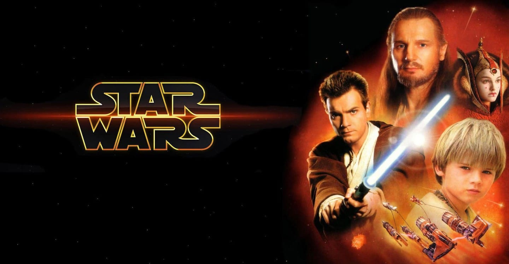

favorite movies
thor:

It was the MCU and Chris Hemsworth that turned me around on Thor as a character. I used to see him as just a guy with a hammer and really didn’t care. That first movie made me interested in the characters and the world. I even started to read the Thor comics because of the MCU. I am not a fan of direction that the new movies have taken. Under Taika Waititi, the movies have become a series of unfunny jokes and the character of Thor is humiliated for laughs. I think Infinity War is the last time we saw Chris really be Thor.
star wars:
I watched the original trilogy when I was a kid like a lot of people. I watched the prequels and even though I didn’t hate them, I would not have considered myself a fan of Star Wars. I played Knight of the Old Repulblic and I loved it. It wasn’t until the Last Jedi was about to come out that I decided I was going to go see it. I liked Luke Skywalker and I liked Mark Hamill. I had not seen the Force Awakens, so I bought that off of itunes so that I would know what was happening when I went to see TLJ. I then went back and watched the previous movies and found that I enjoyed the prequels more than I used to. I replayed KOTOR 1 and played KOTOR 2 for the first time. KOTOR 2 was so good that I wished that I had played it sooner. I had a greater appreciation for Star Wars than before by the time TLJ came out.